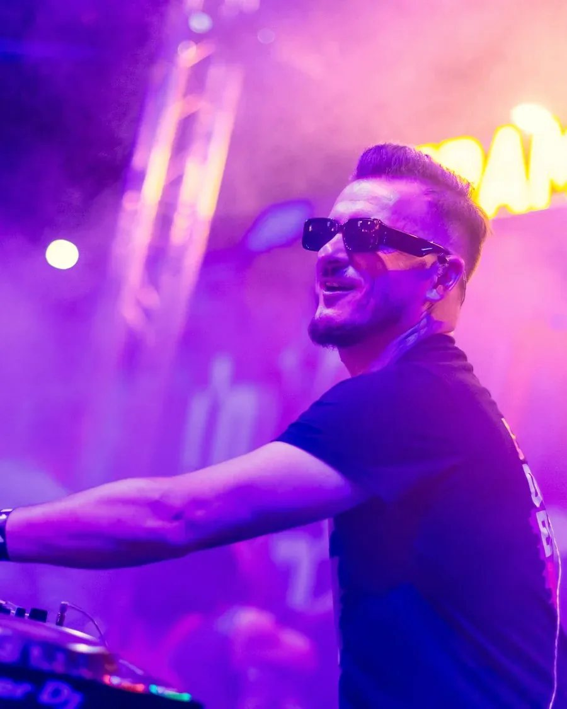
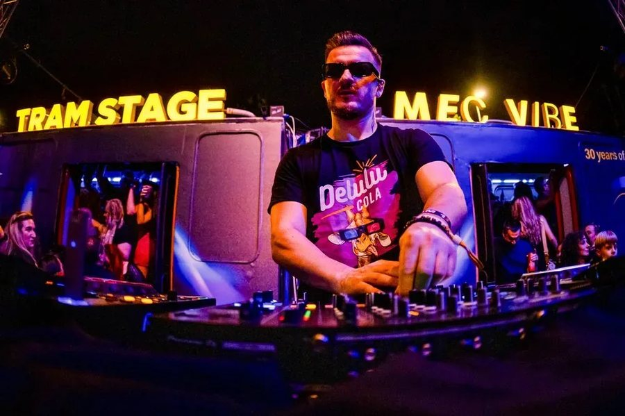
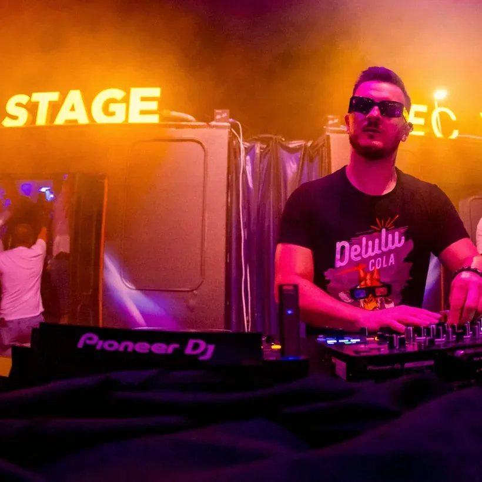

Electronic Press Kit · 2026
DJ & Remixer · Cluj-Napoca, Romania · “Everything is possible with the right mindset.”
Behind the decks since 2001, professionally since 2005 — 25 years of sets in clubs and on big stages, in Romania and abroad. A regular guest at UNTOLD Festival and Overnight by UNTOLD; member of the WAW Recordings label, with original releases on Beatport. Considered one of the most technical DJs in Transylvania — and the secret of every set stays the same: the crowd’s energy.
HouseAfro HouseEthnic HouseProgressive HouseDisco-House



Bookings
+40 754 968 243